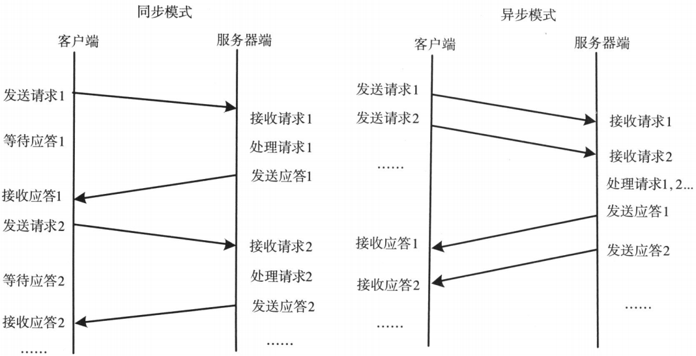
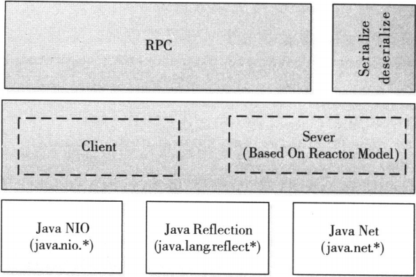
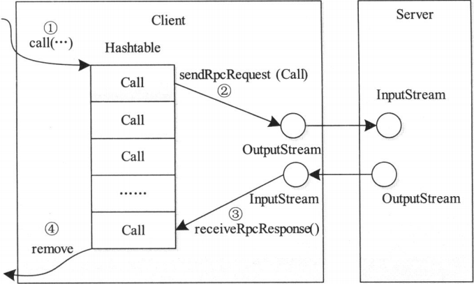
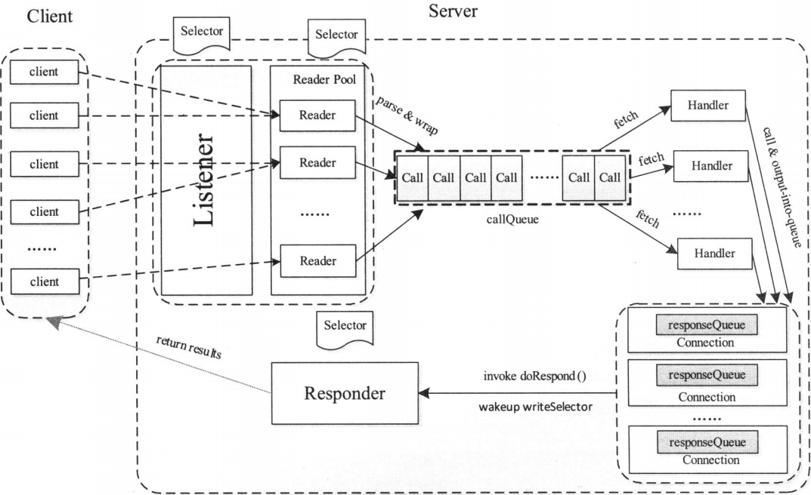

网络通信模块是分布式系统中最底层的模块,他直接支撑了上层分布式环境下复杂的进程间通信逻辑,是所有分布式系统的基础。远程过程调用(RPC)是一种常用的分布式网络通信协议，他允许运行于一台计算机的程序调用另一台计算机的子程序，同时将网络的通信细节隐藏起来，使得用户无需额外地为这个交互作用编程，大大的简化了分布式程序开发，作为一个分布式文件系统，Hadoop实现了自己的RPC通信协议，他是上层多个分布式子系统(MapReduce,Yarn,HDFS等)公用的网络通信模块
RPC通信模型
RPC是一种提供网络从远程计算机上请求服务,但不需要了解底层网络技术的协议
RPC通常采用客户机/服务器模型。请求程序是一个客户机，而服务提供程序则是一个服务器。一个典型的RPC框架，主要包括以下几个部分 :
- 通信模块。两个相互协作的通信模块实现请求 - 应答协议，它们在客户和服务器之间传递请求和应答消息，一般不会对数据包进行任何处理。请求 - 应答协议的实现一般有同步方式和异步方式两种
- 同步模式下客户端程序一直阻塞到服务器断发送的应答请求到达本地
- 异步模式下将请求发送到服务端后，不必等待应答返回，可以做其他事情
- Stub程序。客户端和服务器端均包含Stub程序，可以将之看作代理程序。它使得远程函数调用表现的跟本地调用一样，对用户程序完全透明。在客户端，Stub程序像一个本地程序，但不直接执行本地调用，而是将请求信息提供网络模块发送给服务器端，服务器端给客户端发送应答后，客户端Stub程序会解码对应结果。在服务器端，Stub程序依次进行解码请求消息中的参数、调用相应的服务过程和编码应答结果的返回值等处理
- 调度程序。调度程序接收来自通信模块的请求信息，并根据其中的标识选择一个Stub程序进行处理。通常客户端并发请求量比较大时，会采用线程池提高处理效率
- 客户程序/服务过程。请求的发出者和请求的处理者

一个RPC请求从发送到获取处理结果，所经历的步骤 :
- 客户程序以本地方式调用系统产生的Stub程序
- 该Stub程序将函数调用信息按照网络通信模块的要求封装成消息包，并交给通信模块发送给远程服务器端
- 远程服务器端接收此消息后，将此消息发送给相应的Stub程序
- Stub程序拆封消息，形成被调过程要求的形式，并调用对应函数
- 被调用函数按照所获参数执行，并将结果返回给Stub程序
- Stub程序将此结果封装成消息，通过网络通信模块逐级地传送给客户程序
Hadoop RPC的特点概述
RPC实际上时分布式计算中C/S(Client/Server)模型的一个应用案例
对于Hadoop而言,RPC具有以下几个特点 :
- 透明性。这是所有RPC框架最根本的特点，即当用户在一台计算机的程序调用另外一台计算机上的子程序时，用户自身不应感觉到其间设计机器间的通信，而是感觉像是在执行一个本地调用
- 高性能。Hadoop各个系统(HDFS,YARN,MapReduce等)均采用了Master/Slave架构，其中，Master实际上是一个RPC Server，它负责处理集群中所有Slave发送的服务请求，为了保证Master的并发处理能力，RPC Server应是一个高性能服务器，能够高效地处理来自多个Client的并发RPC请求
- 可控性。RPC是Hadoop最底层最核心的模块之一，保证其轻量级，高性能和可控性显得尤为重要
RPC总体架构
Hadoop RPC主要分为四个部分，分别是序列化层、函数调用层、网络传输层和服务器端处理框架
具体实现机制 ：
- 序列化层。序列化主要作用是将结构化对象转为字节流以便于通过网络进行传输或写入持久存储，在RPC框架中，它主要是用于将用户请求中的参数或者应答转换成字节流以便跨机器传输
- 函数调用层。函数调用层主要功能是定位要调用的而函数并执行该函数，Hadoop RPC采用了Java反射机制与动态代理实现了函数调用
- 网络传输层。网络传输层描述了Client与Server之间消息传输的方式，Hadoop RPC采用了基础TCP/IP的Socket机制
- 服务器端处理框架。服务器端处理框架可被抽象为网络I/O模型，它描述了客户端与服务器间信息的交互方式，它的设计直接决定这服务器端的并发处理能力，而Hadoop RPC采用了基于Reactor设计模式的事件驱动I/O模型

Hadoop RPC总体架构自下而上可分为两层，第一层是一个基于Java NIO实现的客户机 - 服务器通信模型。其中，客户端将用户的调用方法及其参数封装成请求包后发送到服务器端。服务器端收到请求包后，经解包、调用参数、打包结果等一系列操作后，将结果返回给客户端。为了增强Server端的扩展性和并发处理能力，Hadoop RPC采用了基于事件驱动的Reactor设计模式，在具体实现时，用到了JDK提供的各种功能包，主要包括java.nio、java.lang.reflect(反射机制和动态代理)、java.net(网络编程)等。第二层是供更上层程序直接调用的RPC接口，这些接口底层即为C/S通信模型
Hadoop RPC使用方法
Hadoop RPC对外主要提供了两种接口(见类org.apache.hadoop.ipc.RPC)，分别是 ：
- public static
ProtocolProxy getProxy/waitForProxy() : 构造一个客户端代理对象，用于向服务器发送RPC请求 - public static Server RPC.Builder (Configuration).build() : 为某个协议实例构造一个服务器对象，用于处理客户端发送的请求
使用Hadoop RPC分为以下4个步骤 ：
定义RPC协议
RPC协议是客户端和服务器端之间的通信接口，它定义了服务器端对外提供的服务接口。如下所示，我们定义一个ClientProtocol通信接口，声明了echo和add两个方法。Hadoop中所有自定义RPC接口都需要继承VersionedProtocol接口，它描述了协议的版本信息
1 | interface ClientProtocol extends org.apache.hadoop.ipc.VersionedProtocol { |
实现RPC协议
Hadoop RPC协议通常是一个Java接口，用户需要实现该接口
1 | public static class ClientProtocolImpl implements ClientProtocol { |
构造并启动RPC Server
直接使用静态类Builder构造一个RPC Server，并调用函数start()启动该Server
1 | Server server = new RPC.Builder(conf).setProtocol(ClientProtocol.class) |
构造RPC Client并发送RPC请求
使用静态方法getProxy构造客户端代理对象
1 | proxy = (ClientProtocol)RPC.getProxy( |
Hadoop RPC类详解
Hadoop RPC主要有三个大类组成，即RPC、Client、Server，分别对应对外编程接口、客户端实现、服务器实现
ipc.RPC实现
RPC类实际上是对底层客户机 - 服务器网络模型的封装，以便为程序员提供一套更方便简洁的编程接口
RPC类定义了一系列构建和销毁RPC客户端的方法，构建方法分为getProxy和waitForProxy两类，销毁方只有一个，即为stopProxy。RPC服务器的构建则由静态内部类RPC.Builder，该类提供了一些方法共用户设置一些基本的参数，设置完成参数，可调用build()完成一个服务器对象的构建，调用start()方法启动该服务器
ipc.Client
Client主要完成的功能是发送远程过程调用信息并接收执行结果。
Client内部有两个重要的内部类，分别是 ：
- Call类 ： 封装了一个RPC请求，它包含5个成员变量，分别是唯一标识ID、函数调用信息param、函数执行返回值value、出错或者异常信息error和执行完成标识符done。由于Hadoop RPC Server采用异步方式处理客户端请求，这使远程过程调用的发生顺序与结果返回顺序无直接关系，而Client端正式提供ID识别不同的函数调用的。当客户端向服务器端发送请求时，只需填充id和param两个变量，而剩下的三个变量则由服务器根据函数执行情况填充
- Connection类 ： Client与每个Server之间维护一个通信连接，与该连接相关的基本信息及操作被封装到Connection类中，基本信息主要包括通信连接唯一标识、与Server端通信的Socket、网络输入数据流(in)、网络输出数据流(out)、保存RPC请求的哈希表(calls)等。操作则包括 ：
- addCall – 将一个Call对象添加到哈希表中
- sendParam – 向服务器端发送RPC请求
- receiveResponse – 从服务器端接收已经处理完成的RPC请求
- run – Connection是一个线程类，它的run方法调用了receiveResponse方法，会一直等待接收RPC返回结果
当调用Call函数执行某个远程方法时，Client端需要及进行以下四个步骤 ：
- 创建一个Connection对象，并将远程方法调用信息封装成Call对象，放到Connection对象中的哈希表中
- 调用Connection类中的sendRpcRequest()方法将当前Call对象发送给Server端
- Server端处理完RPC请求后，将结果通过网络返回给Client端，Client端通过receiveRpcResponse()函数获取结果
- Client检查结果处理状态，并将对应Call对象从哈希表中删除

ipc.Server
Hadoop采用了Master/Slave结构，其中Master是整个系统的单点，这是制约系统性能和可扩展性的最关键因素之一
ipc.Server采用了很多提高并发处理能力的技术，主要包括线程池、事件驱动和Reactor设计模式等
Reactor是并发编程中一种基于事件驱动的设计模式，它具有以下两个特点 ：
- 通过派发/分离IO操作事件提高系统的并发性能
- 提供了粗粒度的并发控制，使用单线程实现，避免了复杂的同步处理
ipc.Server实际上实现了一个典型的Reactor设计模式，典型的Reactor设计模式中主要包括以下几个角色 ：
- Reactor ： I/O事件的派发者
- Acceptor ： 接受来自Client的连接，建立与Client对应的Handler，并向Reactor注册此Handler
- Handler ： 与一个Client通信的实体，并按一定的过程实现业务的处理
- Reader/Sender ： 为了加速处理速度，Reactor模式往往构建一个存放数据处理线程的线程池，这样数据读出后，立即扔到线程吃中等待后续处理即可。为此，Reactor模式一般分离Handler中的读和写两个过程，分别注册成单独的读事件和写事件，并由对应的Reader和Sender线程处理

ipc.Server处理过程被划分成3个阶段 ： 接收请求、处理请求和返回结果
接收请求
该阶段主要任务是接收来自各个客户端的RPC请求，并将它们封装成固定的格式(Call类)放到一个共享队列(CallQueue)中,该阶段内部又分为建立连接和接收请求两个子阶段，分别由Listener和Reader两种线程完成
整个Server只有一个Listener线程，统一负责监听来自客户端的连接请求，一旦由新的请求到达，它会采用轮询的方式从线程池中选择一个Reader线程进行处理，而Reader线程可同时存在多个，它们分别负责接收一部分客户端连接的RPC请求，至于每个Reader线程负责哪些客户端连接，完全由Listener决定，当前Listener只是采用了简单的轮询分配机制
Listener和Reader线程内部各自包含一个Selector对象，分别用于监听SelectionKey.OP_ACCEPT和SelectionKey.OP_READ事件。对于Listener线程，主循环的实现体是监听是否有新的连接请求到达，并采用轮询策略选择一个Reader线程处理新连接；对于Reader线程，主循环的实现体是监听客户端连接中是否有新的RPC请求到达，并将新的RPC请求封装成Call对象，放到共享队列中
处理请求
该阶段主要任务是从共享队列中获取call对象，执行对应的函数调用，并将结果返回给客户端，这全部由Handler线程完成
Server端可同时存在多个Handler线程，它们并行从共享队列中读取Call对象，经执行对应的函数调用后，将尝试着直接将结果返回给对应的客户端。但考虑到某些函数调用返回结果很大或者网络速度很慢，可能难以将结果一次性发送给客户端，此时Handler将尝试着将后续发送任务交给Responder线程
返回结果
Server仅存一个Responder线程，它的内部包含一个Selector对象，用于监听SelectionKey.OP_WRITE事件。当Handler没能将结果一次性发送到客户端时，会向该Selector对象注册SelectionKey.OP_WRITE事件，进而由Responder线程采用异步方式继续发送未发送完成的结果
Hadoop RPC参数调优
HadoopRPC对外提供一些可配置参数，以便于用户根据业务需求和硬件环境对其进行调优 ：
- Reader线程数目。参数ipc.server.read.threadpool.size设置
- 每个Handler线程对应的最大Call数目。参数ipc.server.handler.queue.size设置
- Handler线程数目。参数yarn.resourcemanager.resource-tracker.client.thread-count和dfs.namenode.service.handler.count设置
- 客户端最大重试次数。参数ipc.client.connect.max.size设置